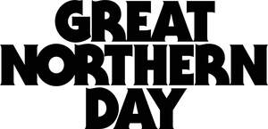

Trade Mark Journal No.2025/033 15 August 2025
UK00004244121 4 August 2025 (9,16,21,25,29,30,32,33,35,41,43)
Mark 1
GREAT NORTHERN DAY
Mark 2

- Class 9
- Computer software; Application software; Mobile applications; Electronic publications; downloadable publications; downloadable electronic publications; downloadable electronic books, magazines, periodicals, newsletters, newspapers, journals, and other publications; Media content; Downloadable media; Video recordings; Audio recordings; podcasts; vodcasts; Downloadable videos, films, music sound recordings, sound recordings, podcasts and vodcasts; computer programs for accessing, sending, receiving, collection, editing, organising, modifying, transmission, storage and sharing recorded content, audio recordings, podcasts, vodcasts, webcasts, vlogs, videos, still and moving images, photos, text, messages, news, information, data, audio-visual content and multi-media content and advertisements; apparatus for recording, broadcasting, transmission, receiving, processing, generating, reproducing, distributing, re-distributing, tracking, tagging, encoding and decoding of audio and video content, still and moving images, data and metadata, sound; digital recordings of performing arts entertainment provided from the Internet; sound recordings and images downloadable from the Internet; sunglasses; protective eyewear; cases and covers for smartphones; protective footwear for the prevention of accident or injury; clothing for the protection against accident or injury; parts and fittings for all the aforesaid goods.
- Class 16
- Printed matter; printed publications; training manuals; instructional and teaching materials; books; graphic art books; sticker books; information books; printed promotional material; flyers; leaflets; advertisement boards; stationery; pens; pencils; erasers; markers; art prints; graphic art prints; graphic drawings; photographic prints; graphic prints and reproductions; graphic representations; printed art reproductions; graphic art reproductions; paintings; pictures; photographs; posters; wall decorations of paper; canvas prints; stickers; paper coasters; beer mats; passes, events albums; events programmes; artists' and drawing materials; art prints; temporary tattoos; removable tattoos; flags made of paper.
- Class 21
- Glassware; mugs, including reusable mugs; beer glasses; tankards; bottle openers; corkscrews; beer mats and coasters not of paper or textile; drinking bottles and flasks; insulated bottles; reusable stainless steel water bottles; ice buckets; parts and fittings for all the aforesaid goods.
- Class 25
- Clothing; footwear; headwear.
- Class 29
- Meat, fish, poultry, and game; prepared meals consisting principally of meat, fish, poultry, and game; meat extracts; burgers; meat burgers; meat-based snack foods; seafood; foods made from fish; dairy products; cheese; butter; cheese products; cream; yoghurt; milk; milk beverages; preserved, frozen, dried and cooked fruits and vegetables; prepared meals consisting principally of vegetables; fruit desserts and salads; fruit and vegetable spreads, pastes and purees; margarine; jellies, jams; fruit conserves; processed fruits and vegetables; fruit and vegetable based snack foods; potato-based snack foods; potato crisps; potato chips; prepared meals consisting primarily of meat substitutes; snack food containing soy; vegetable burgers; soy burger patties.
- Class 30
- Coffee, tea, cocoa; rice, pasta and noodles; flour and preparations made from cereals; bread, pastries and confectionery; chocolate; chocolate based products; ice cream, sorbets and other edible ices; frozen yogurts; salt, seasonings, spices, preserved herbs; vinegar, sauces and other condiments; marinades containing spices; coffee substitutes.
- Class 32
- Non-alcoholic beverages; beer; beer-based beverages; brewery products; extracts of hops for making beer; malt beer; wheat beer; stout; lager; ale; porter; craft beer; IPA (Indian Pale Ale); flavoured beer; low alcohol beer; non-alcoholic beer; imitation beer; mineral and aerated waters; fruit beverages and fruit juices; syrups and other non-alcoholic preparations for making beverages; non-alcoholic cocktails; energy drinks; sports drinks; non-alcoholic malt free beverages; table waters; tomato juice [beverage]; vegetable juices; waters; beer-based cocktails; ginger ale; ginger beer.
- Class 33
- Alcoholic beverages except beers; wines; spirits; alcoholic cocktails; liqueurs.
- Class 35
- Marketing, promotion, and advertising services; Business management and administration; business partnership search; business project management; advertising, promoting and marketing the goods and services of others through communication networks, including through the Internet, websites, podcasts, vodcasts, social media, search engines, mobile devices, blogs and other communication channels; online publication of advertising texts; rental of advertising space on online platforms, including websites and digital applications; production and dissemination of video recordings for advertising, promotional or marketing purposes; social video advertising services; providing video collation, storage and retrieval services; maintaining a registry of audio recordings, podcasts, vodcasts, webcasts, videos, still and moving images, photos, text, messages, news, information, data, audio-visual content and multi-media content; organisation, arrangement and conducting of conferences, conventions, seminars, events and exhibitions for commercial or advertising purposes; Retail and wholesale services connected to the sale of food and drink; retail and wholesale services connected with the sale of beer and alcoholic beverages; Retail and wholesale services connected with the sale of sunglasses, protective eyewear, cases and covers for smartphones, protective footwear for the prevention of accident or injury, clothing for the protection against accident or injury, printed matter, printed publications, training manuals, instructional and teaching materials, books, graphic art books, sticker books, information books, printed promotional material, flyers, leaflets, advertisement boards, stationery, pens, pencils, erasers, markers, art prints, graphic art prints, graphic drawings, photographic prints, graphic prints and reproductions, graphic representations, printed art reproductions, graphic art reproductions, paintings, pictures, photographs, posters, wall decorations of paper, canvas prints, stickers, paper coasters, beer mats, passes, events albums, events programmes, artists' and drawing materials, art prints, temporary tattoos, removable tattoos, flags made of paper, clothing, footwear, headwear, glassware, mugs, including reusable mugs, beer glasses, tankards, bottle openers, corkscrews, beer mats and coasters not of paper or textile, drinking bottles and flasks, insulated bottles, reusable stainless steel water bottles, ice buckets, meat, fish, poultry, and game, prepared meals consisting principally of meat, fish, poultry, and game, meat extracts, burgers, meat burgers, meat-based snack foods, seafood, foods made from fish, dairy products, cheese, butter, cheese products, cream, yoghurt, milk, milk beverages, preserved, frozen, dried and cooked fruits and vegetables, prepared meals consisting principally of vegetables, fruit desserts and salads, fruit and vegetable spreads, pastes and purees, margarine, jellies, jams, fruit conserves, processed fruits and vegetables, fruit and vegetable based snack foods, potato-based snack foods, potato crisps, potato chips, prepared meals consisting primarily of meat substitutes, snack food containing soy, vegetable burgers, soy burger patties, coffee, tea, cocoa, rice, pasta and noodles, flour and preparations made from cereals, bread, pastries and confectionery, chocolate, chocolate based products, ice cream, sorbets and other edible ices, frozen yogurts, salt, seasonings, spices, preserved herbs, vinegar, sauces and other condiments, marinades containing spices, coffee substitutes, non-alcoholic beverages, beer, beer-based beverages, brewery products, extracts of hops for making beer, malt beer, wheat beer, stout, lager, ale, porter, craft beer, IPA (Indian Pale Ale), flavoured beer, low alcohol beer, non-alcoholic beer, imitation beer, mineral and aerated waters, fruit beverages and fruit juices, syrups and other non-alcoholic preparations for making beverages, non-alcoholic cocktails, energy drinks, sports drinks, non-alcoholic malt free beverages, table waters, tomato juice [beverage], vegetable juices, waters, beer-based cocktails, ginger ale, ginger beer, alcoholic beverages, wines, spirits, alcoholic cocktails, liqueurs.
- Class 41
- Entertainment; management of events; sporting and cultural activities; organisation, production and presentation of events for entertainment purposes; organisation, production, management and conducting of performance art entertainment including music, dance, comedy, theatre, and live painting; presentation of live show performances; production, distribution, re-distribution, presentation and syndication of videos, vlogs, sound recordings, multimedia presentations, video recordings, multi-media recordings, sound recordings, audio recordings, webcasts, still and moving images, photos, audio-visual recordings, graphics, and of live and pre-recorded shows and performances; entertainment services in the nature of provision of videos, shows, graphics, sound recordings, audio-recordings, animation and multimedia presentations, and other audio-visual works via the Internet; organisation, production and presentation of leisure activities, sports events and activities, educational events and activities, workshops, symposium, seminars, webinars, shows, competitions, games, contests, concerts, quizzes, and events for cultural purposes; providing on-line electronic publications (not downloadable); consultancy, advisory and information services relating to any of the aforesaid services; including all the aforesaid services provided through communication networks, including Internet, websites, social media, search engines, digital channels.
- Class 43
- Services for providing food and drink; bar and restaurant services; restaurant services incorporating licensed bar facilities; outdoor catering services; provision of event facilities; beer tasting services including the provision of beverages; non-alcoholic beverage tasting services including the provision of beverages; providing information in the nature of recipes for beverages; information, advisory and consultancy services in relation to all of the aforesaid services.
Northern Monk Brewing Co. Limited
Representative: Haseltine Lake Kempner LLP